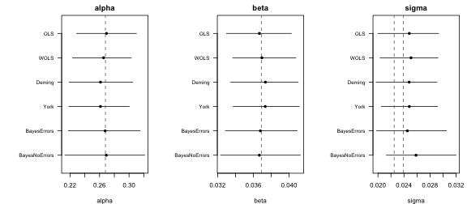
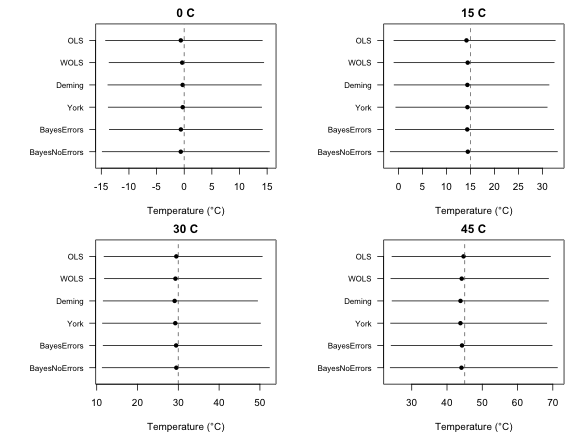
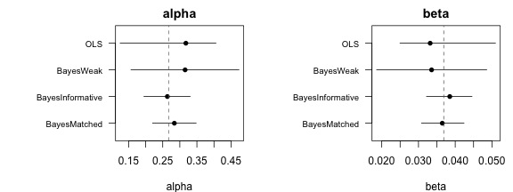
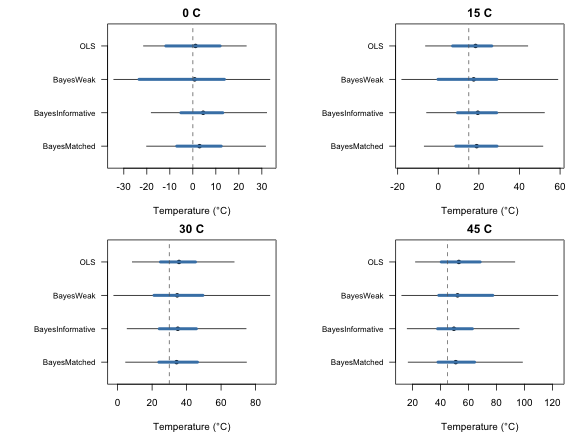
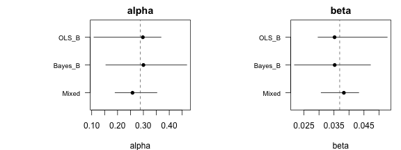
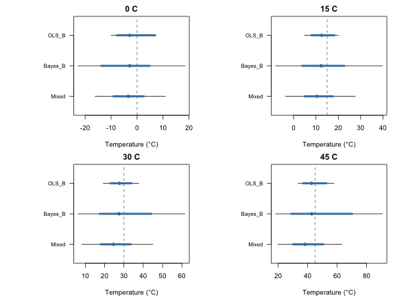

This vignette fits frequentist and Bayesian calibrations to the same
dataset and compares their parameters and reconstructions. It then shows
two cases where the Bayesian approach narrows uncertainty: small
datasets with informative priors, and mixed models where one material
has few observations. We use simulated datasets, so we know the true
values. It builds on
vignette("frequentist", package = "bayclumpr") and
vignette("bayesian", package = "bayclumpr").
The dataset
We simulate 50 observations under the intermediate error scenario. The true intercept is 0.268 and the true slope is 0.0369.
set.seed(3)
ds <- cal.dataset(error = "S2", nobs = 50)Two true values of sigma are useful here. The scatter of
individual samples around the line, without measurement error, is
0.0225. Adding the measurement errors in D47 and
Temperature raises it to about 0.0239.
Fitting the calibrations
We fit the four frequentist models and two Bayesian models: one that uses measurement errors and one that ignores them. We use weak priors, so the Bayesian results depend on the data and not on prior information. This makes the comparison with the frequentist models fair.
freq <- list(
OLS = cal.ols(data = ds),
WOLS = cal.wols(data = ds),
Deming = cal.deming(data = ds),
York = cal.york(data = ds)
)
#> Warning in .bootstrap(data, replicates, samples, function(d) {: 32 of 1000 bootstrap
#> replicates failed and were removed.
bayes <- cal.bayesian(calibrationData = ds, models = c("errors", "noerrors"), priors = "Weak")cal.draws() puts the Bayesian draws in the same shape as
the bootstrap replicates, so we can store all six calibrations in one
list:
Comparing parameters
cal.summary() summarizes every calibration in the same
way. We combine the six summaries into one table:
pars <- do.call(rbind, lapply(names(fits), function(m) cbind(method = m, cal.summary(fits[[m]]))))
pars
#> method parameter estimate SE median lower upper
#> 1 OLS alpha 0.26938557 0.020490783 0.26939826 0.22882908 0.31002973
#> 2 OLS beta 0.03662650 0.001835708 0.03667476 0.03298794 0.04025965
#> 3 OLS sigma 0.02481634 0.002303671 0.02480963 0.01999532 0.02932177
#> 4 WOLS alpha 0.26424805 0.018430253 0.26535566 0.22318837 0.30313896
#> 5 WOLS beta 0.03705470 0.001693005 0.03694955 0.03368568 0.04075382
#> 6 WOLS sigma 0.02497436 0.002315616 0.02507140 0.02032563 0.02921380
#> 7 Deming alpha 0.26123043 0.021732629 0.26122114 0.21868252 0.30506100
#> 8 Deming beta 0.03731127 0.001950126 0.03734394 0.03346909 0.04101653
#> 9 Deming sigma 0.02474485 0.002331213 0.02479259 0.01972943 0.02906708
#> 10 York alpha 0.26060948 0.020739581 0.26119824 0.21832058 0.30031487
#> 11 York beta 0.03736634 0.001864008 0.03732117 0.03372884 0.04112536
#> 12 York sigma 0.02483864 0.002223530 0.02481953 0.02053769 0.02914216
#> 13 BayesErrors alpha 0.26730177 0.024543403 0.26759312 0.21768550 0.31483752
#> 14 BayesErrors beta 0.03679598 0.002041054 0.03678283 0.03286877 0.04090155
#> 15 BayesErrors sigma 0.02463271 0.002759222 0.02451672 0.01981052 0.03052497
#> 16 BayesNoErrors alpha 0.26859589 0.026828592 0.26913052 0.21286998 0.32134552
#> 17 BayesNoErrors beta 0.03668889 0.002237532 0.03666659 0.03231665 0.04126362
#> 18 BayesNoErrors sigma 0.02607393 0.002772372 0.02584695 0.02128824 0.03199959To plot them, we use a small function that draws the median and the 95% interval of each method:
# Median and interval of each method, with the true value as a dashed line
plotRanges <- function(est, lower, upper, labels, truth, xlab, main) {
y <- rev(seq_along(est))
plot(est, y, xlim = range(lower, upper, truth), ylim = c(0.5, length(est) + 0.5),
yaxt = "n", pch = 16, xlab = xlab, ylab = "", main = main)
segments(lower, y, upper, y)
axis(2, at = y, labels = labels, las = 1, cex.axis = 0.8)
abline(v = truth, lty = 2, col = "grey40")
}
op <- par(mfrow = c(1, 3), mar = c(4, 8, 2, 1))
for (p in c("alpha", "beta", "sigma")) {
d <- pars[pars$parameter == p, ]
truth <- switch(p, alpha = 0.268, beta = 0.0369, sigma = c(0.0225, 0.0239))
plotRanges(d$median, d$lower, d$upper, d$method, truth, xlab = p, main = p)
}
par(op)A few things to look for in these plots:
- In this scenario, the errors in
Temperatureare small relative to the spread of temperatures. Ignoring them shrinks the OLS slope by only about 0.15%, so all methods should recover similar slopes. - Bootstrap intervals and posterior intervals answer different questions, but with 50 observations and weak priors, they tend to have similar widths.
-
sigmadiffers by design. The Bayesian errors model removes the measurement errors, so itssigmaestimates 0.0225. The other methods report the residual SD around the fitted line, so theirsigmaestimates 0.0239. With 50 observations, each estimate has a standard error of about 0.002, so they won’t match these values exactly.
Comparing reconstructions
We create four samples with known temperatures: 0, 15, 30, and 45 °C. Their D47 values fall exactly on the true calibration line. Each sample is the mean of four replicates with a standard error of 0.005.
trueTemp <- c(0, 15, 30, 45)
recData <- data.frame(
Sample = paste(trueTemp, "C"),
D47 = 0.268 + 0.0369 * temp2x(trueTemp)$Temperature,
D47error = 0.005,
N = 4
)The Bayesian reconstructions include the scatter of individual
samples around the calibration line (sigma). For a fair
comparison, we use prediction = TRUE in
rec.clumped(), so the frequentist reconstructions include
it too.
recs <- do.call(rbind, lapply(names(fits), function(m) {
r <- if (m %in% names(freq)) {
rec.clumped(recData = recData, obCal = fits[[m]], prediction = TRUE)
} else {
rec.bayesian(calModel = fits[[m]], recData = recData)
}
cbind(method = m, r)
}))
recs[, c("method", "Sample", "meanTemp", "SD", "SE", "median", "lower", "upper")]
#> method Sample meanTemp SD SE median lower upper
#> 1 OLS 0 C -0.6321531 7.594940 7.198448 -0.6164261 -14.2222408 14.11506
#> 2 OLS 15 C 14.3787144 8.892067 8.478055 14.1737325 -0.9486301 32.67945
#> 3 OLS 30 C 29.3969152 10.478036 9.826486 29.5111685 11.8196976 50.56258
#> 4 OLS 45 C 44.4228376 11.987783 11.447905 44.6936237 24.4225767 69.32036
#> 5 WOLS 0 C -0.4604235 7.740718 7.213856 -0.3672330 -13.5773180 14.37793
#> 6 WOLS 15 C 14.3921647 8.834916 8.441088 14.4244825 -0.9438786 32.45630
#> 7 WOLS 30 C 29.2253475 10.373349 9.760972 29.2962292 11.9032007 50.33997
#> 8 WOLS 45 C 44.0381604 11.922576 11.290023 44.1702639 24.0975766 68.77121
#> 9 Deming 0 C -0.3427476 7.520083 7.076323 -0.2850700 -13.8003683 13.95006
#> 10 Deming 15 C 14.4194203 8.653930 8.233398 14.3602174 -0.9035868 31.37766
#> 11 Deming 30 C 29.1470397 10.165391 9.571542 29.0985619 11.6087616 49.41607
#> 12 Deming 45 C 43.8384573 11.936121 11.280141 43.8283002 24.4476186 68.76120
#> 13 York 0 C -0.3104239 7.435042 7.075957 -0.2732568 -13.7313391 13.99143
#> 14 York 15 C 14.4337222 8.918905 8.195478 14.3672827 -0.5585507 30.99715
#> 15 York 30 C 29.1402527 10.162500 9.730341 29.2598505 11.4267711 50.12229
#> 16 York 45 C 43.8073818 11.805321 11.156122 43.8101279 24.0242764 68.26650
#> 17 BayesErrors 0 C -0.3682649 7.475467 7.046920 -0.6063122 -13.5343079 14.13353
#> 18 BayesErrors 15 C 14.7187942 8.868534 8.380187 14.3322017 -0.6561463 32.36621
#> 19 BayesErrors 30 C 29.8792079 10.284892 9.804652 29.4628342 11.6000191 50.43740
#> 20 BayesErrors 45 C 44.9283832 12.062642 11.516244 44.2557390 24.1800483 69.79286
#> 21 BayesNoErrors 0 C -0.3397851 8.045796 7.671513 -0.6224513 -14.8200158 15.40411
#> 22 BayesNoErrors 15 C 14.7836824 9.364840 8.865810 14.4512593 -1.7186166 33.12994
#> 23 BayesNoErrors 30 C 30.0231868 10.851156 10.359854 29.5155106 11.3702679 52.31710
#> 24 BayesNoErrors 45 C 45.0401321 12.950560 12.120504 44.1019026 23.9225760 71.29317We plot the median and the 95% interval of each sample under each method. The dashed lines show the true temperatures.
op <- par(mfrow = c(2, 2), mar = c(4, 8, 2, 1))
for (i in seq_along(trueTemp)) {
d <- recs[recs$Sample == recData$Sample[i], ]
plotRanges(d$median, d$lower, d$upper, d$method, trueTemp[i], xlab = "Temperature (°C)", main = recData$Sample[i])
}
par(op)A few things to look for in these plots:
- The intervals widen at higher temperatures. D47 changes less per degree when it’s warm, so the same error in D47 spans more degrees.
- The intervals are not symmetric around the median, for the same reason.
- In this dataset, most of the width comes from
sigma, the scatter of individual samples around the calibration line. It is about five times larger thanD47error. Without it (prediction = FALSE), the frequentist intervals only describe the temperature predicted by the line, and they are much narrower.
Without the residual scatter
To see how much sigma contributes, we compare the
standard errors of the OLS reconstructions with and without it:
data.frame(
Sample = recData$Sample,
SE_line = rec.clumped(recData = recData, obCal = fits$OLS)$SE,
SE_prediction = rec.clumped(recData = recData, obCal = fits$OLS, prediction = TRUE)$SE
)
#> Sample SE_line SE_prediction
#> 1 0 C 2.037145 7.143138
#> 2 15 C 2.021889 8.425822
#> 3 30 C 2.243128 9.774638
#> 4 45 C 2.783529 11.669806Use prediction = FALSE when the question is about the
temperature predicted by the calibration line. Use
prediction = TRUE, or rec.bayesian(), when the
question is about the temperature of an individual sample.
When the Bayesian approach narrows uncertainty
The frequentist and Bayesian results above are very similar. This is expected. Both fit the same model to the same 50 observations, and the weak priors add almost no information. A Bayesian model narrows uncertainty only when it uses information that the frequentist fit doesn’t have. The next two cases show this.
Small datasets with informative priors
The precision of a prior adds to the precision of the data. With 50 observations, the slope has an SE of about 0.0017 from the data alone. A prior SD of 0.004 narrows it by only about 8%. With 10 observations, the SE from the data alone is about 0.004, the same as the prior SD. The prior should then narrow the slope’s interval by about 30%.
We simulate 10 observations and fit OLS and three Bayesian versions of the errors model:
-
BayesWeakuses weak priors. -
BayesInformativeuses the informative preset. Its means (0.231 and 0.039) are not the true values of this simulation (0.268 and 0.0369). -
BayesMatcheduses the same SDs as the informative preset, centered on the true values. This is what a prior from an earlier calibration in the same reference frame would look like.
small <- cal.dataset(error = "S2", nobs = 10)
matched <- list(alpha = c(0.268, 0.065), beta = c(0.0369, 0.004))
smallFits <- list(
OLS = cal.ols(data = small),
BayesWeak = cal.draws(cal.bayesian(calibrationData = small, models = "errors", priors = "Weak")),
BayesInformative = cal.draws(cal.bayesian(calibrationData = small, models = "errors", priors = "Informative")),
BayesMatched = cal.draws(cal.bayesian(calibrationData = small, models = "errors", priors = matched))
)
smallPars <- do.call(rbind, lapply(names(smallFits), function(m) cbind(method = m, cal.summary(smallFits[[m]]))))
smallPars
#> method parameter estimate SE median lower upper
#> 1 OLS alpha 0.30750311 0.070589913 0.31772707 0.12542545 0.40574002
#> 2 OLS beta 0.03434248 0.006538214 0.03318122 0.02497593 0.05095105
#> 3 OLS sigma 0.03045302 0.007089762 0.03151556 0.01276731 0.04084255
#> 4 BayesWeak alpha 0.31531704 0.079516741 0.31549133 0.15718241 0.47302565
#> 5 BayesWeak beta 0.03356455 0.007521755 0.03356495 0.01861357 0.04858040
#> 6 BayesWeak sigma 0.04049678 0.013035279 0.03788493 0.02349542 0.07553981
#> 7 BayesInformative alpha 0.26320642 0.033901102 0.26355254 0.19502135 0.33032058
#> 8 BayesInformative beta 0.03848014 0.003102341 0.03852054 0.03219750 0.04455822
#> 9 BayesInformative sigma 0.03939186 0.011818486 0.03722380 0.02318438 0.06872334
#> 10 BayesMatched alpha 0.28401429 0.032761749 0.28402868 0.22036974 0.34778233
#> 11 BayesMatched beta 0.03650246 0.003002458 0.03647967 0.03082584 0.04238859
#> 12 BayesMatched sigma 0.03843304 0.011774738 0.03630002 0.02298066 0.06737819
op <- par(mfrow = c(1, 2), mar = c(4, 9, 2, 1))
for (p in c("alpha", "beta")) {
d <- smallPars[smallPars$parameter == p, ]
plotRanges(d$median, d$lower, d$upper, d$method, switch(p, alpha = 0.268, beta = 0.0369), xlab = p, main = p)
}
par(op)Both informative priors should give narrower intervals than OLS and the weak priors. The matched prior narrows them around the true values. The informative preset can also pull the estimates toward its own means. A prior that doesn’t suit the data gives narrower intervals around the wrong values.
How much does this help reconstructions? rec.clumped()
works with any table of draws, Bayesian ones included. We use it to
reconstruct the four samples from earlier in two ways: for the
calibration line alone (prediction = FALSE) and for
individual samples (prediction = TRUE).
smallLine <- lapply(smallFits, function(f) rec.clumped(recData = recData, obCal = f))
#> Warning in .rec_exact(obCal, recData, ndraws, level = level): 14 draws had 10^6/T^2 at or
#> below zero and were removed.
smallSample <- lapply(smallFits, function(f) rec.clumped(recData = recData, obCal = f, prediction = TRUE))
#> Warning in .rec_exact(obCal, recData, ndraws, level = level): 51 draws had 10^6/T^2 at or
#> below zero and were removed.To plot both, we use a second function. For each method, the thick blue segment is the 95% interval for the calibration line and the thin black segment is the 95% interval for an individual sample.
# Intervals for the calibration line (thick) and for individual samples (thin)
plotRecs <- function(line, sample, labels, truth, main) {
y <- rev(seq_along(labels))
plot(sample$median, y, xlim = range(sample$lower, sample$upper, truth), ylim = c(0.5, length(y) + 0.5),
yaxt = "n", pch = 16, xlab = "Temperature (°C)", ylab = "", main = main)
segments(sample$lower, y, sample$upper, y)
segments(line$lower, y, line$upper, y, lwd = 4, col = "steelblue")
axis(2, at = y, labels = labels, las = 1, cex.axis = 0.8)
abline(v = truth, lty = 2, col = "grey40")
}
op <- par(mfrow = c(2, 2), mar = c(4, 9, 2, 1))
for (i in seq_along(trueTemp)) {
line <- do.call(rbind, lapply(smallLine, function(r) r[i, ]))
sample <- do.call(rbind, lapply(smallSample, function(r) r[i, ]))
plotRecs(line, sample, names(smallFits), trueTemp[i], main = recData$Sample[i])
}
par(op)The same comparison as SEs:
lineSE <- sapply(smallLine, function(r) r$SE)
sampleSE <- sapply(smallSample, function(r) r$SE)
rownames(lineSE) <- rownames(sampleSE) <- recData$Sample
round(lineSE, 2)
#> OLS BayesWeak BayesInformative BayesMatched
#> 0 C 5.87 16.29 4.65 4.83
#> 15 C 4.96 31.25 4.82 5.03
#> 30 C 5.19 16.60 5.40 5.65
#> 45 C 7.19 12.35 6.26 6.58
round(sampleSE, 2)
#> OLS BayesWeak BayesInformative BayesMatched
#> 0 C 11.27 17.92 12.84 13.14
#> 15 C 12.52 20.84 14.57 14.78
#> 30 C 14.88 28.22 17.45 17.61
#> 45 C 18.33 54.44 20.10 21.50The informative priors should narrow the thick segments, which
describe the calibration line. The thin segments change much less. For
individual samples, sigma still makes up most of the
uncertainty, and priors on alpha and beta
can’t reduce it.
Unbalanced materials in mixed models
Mixed models help when one material has few observations. Its
intercept and slope borrow strength from the other materials, and
sigma is estimated from all observations.
We simulate three materials with the same slope. Materials A and C have 40 observations each. Material B has only 5, and its D47 values are 0.02 higher, so its true intercept is 0.288.
dsA <- cal.dataset(error = "S2", nobs = 40)
dsA$Material <- "A"
dsB <- cal.dataset(error = "S2", nobs = 5)
dsB$Material <- "B"
dsB$D47 <- dsB$D47 + 0.02
dsC <- cal.dataset(error = "S2", nobs = 40)
dsC$Material <- "C"
dsC$D47 <- dsC$D47 - 0.01
dsAll <- rbind(dsA, dsB, dsC)We compare three ways to calibrate material B: OLS on B alone, a Bayesian model on B alone, and a mixed model with all three materials. Bootstrapping five observations is fragile, so a few replicates may fail.
mixedDraws <- cal.draws(cal.bayesian(calibrationData = dsAll, models = "mixed_noerrors", priors = "Weak"))
#> Warning: There were 31 divergent transitions after warmup. See
#> https://mc-stan.org/misc/warnings.html#divergent-transitions-after-warmup
#> to find out why this is a problem and how to eliminate them.
#> Warning: Examine the pairs() plot to diagnose sampling problems
#> Warning in .finish_fit(fits, prior, chains): Check convergence for: BLM3_fit. Print the
#> result for details.
matFits <- list(
OLS_B = cal.ols(data = dsB),
Bayes_B = cal.draws(cal.bayesian(calibrationData = dsB, models = "noerrors", priors = "Weak")),
Mixed = mixedDraws[mixedDraws$Material == "B", ]
)
#> Warning in .bootstrap(data, replicates, samples, function(d) {: 2 of 1000 bootstrap
#> replicates failed and were removed.
cols <- c("parameter", "estimate", "SE", "median", "lower", "upper")
matPars <- do.call(rbind, lapply(names(matFits), function(m) cbind(method = m, cal.summary(matFits[[m]])[, cols])))
matPars
#> method parameter estimate SE median lower upper
#> 1 OLS_B alpha 0.293031889 0.061163378 0.297859500 1.086626e-01 0.36834466
#> 2 OLS_B beta 0.035893847 0.005291686 0.035198148 2.966941e-02 0.05276960
#> 3 OLS_B sigma 0.007504592 0.004439064 0.008717914 6.345469e-17 0.01306020
#> 4 Bayes_B alpha 0.301918753 0.098056914 0.300042359 1.546690e-01 0.46776434
#> 5 Bayes_B beta 0.035101277 0.007487228 0.035238383 2.181148e-02 0.04717958
#> 6 Bayes_B sigma 0.024380117 0.026673640 0.017451049 7.661979e-03 0.08193833
#> 7 Mixed alpha 0.261820821 0.039324055 0.257858905 1.903353e-01 0.35243205
#> 8 Mixed beta 0.037899047 0.003060337 0.038295001 3.071558e-02 0.04326353
#> 9 Mixed sigma 0.023294291 0.001894409 0.023146456 1.998883e-02 0.02733562
op <- par(mfrow = c(1, 2), mar = c(4, 9, 2, 1))
for (p in c("alpha", "beta")) {
d <- matPars[matPars$parameter == p, ]
plotRanges(d$median, d$lower, d$upper, d$method, switch(p, alpha = 0.288, beta = 0.0369), xlab = p, main = p)
}
par(op)The mixed model should give much narrower intervals for material B, since its slope is pulled toward the slopes of A and C.
Next, we reconstruct four samples of material B with the same true temperatures as before. Their D47 values are 0.02 higher, as in the calibration.
recB <- recData
recB$D47 <- recB$D47 + 0.02
recB$Material <- "B"
matLine <- lapply(matFits, function(f) rec.clumped(recData = recB, obCal = f))
#> Warning in .rec_exact(obCal, recData, ndraws, level = level): 42 draws had 10^6/T^2 at or
#> below zero and were removed.
matSample <- lapply(matFits, function(f) rec.clumped(recData = recB, obCal = f, prediction = TRUE))
#> Warning in .rec_exact(obCal, recData, ndraws, level = level): 99 draws had 10^6/T^2 at or
#> below zero and were removed.
op <- par(mfrow = c(2, 2), mar = c(4, 9, 2, 1))
for (i in seq_along(trueTemp)) {
line <- do.call(rbind, lapply(matLine, function(r) r[i, ]))
sample <- do.call(rbind, lapply(matSample, function(r) r[i, ]))
plotRecs(line, sample, names(matFits), trueTemp[i], main = recB$Sample[i])
}
par(op)The same comparison as SEs:
matLineSE <- sapply(matLine, function(r) r$SE)
matSampleSE <- sapply(matSample, function(r) r$SE)
rownames(matLineSE) <- rownames(matSampleSE) <- recB$Sample
round(matLineSE, 2)
#> OLS_B Bayes_B Mixed
#> 0 C 3.30 10.57 2.99
#> 15 C 2.69 158.17 3.27
#> 30 C 2.94 37.27 4.02
#> 45 C 4.43 24.55 5.26
round(matSampleSE, 2)
#> OLS_B Bayes_B Mixed
#> 0 C 4.18 18.03 6.93
#> 15 C 4.02 35.26 7.92
#> 30 C 4.62 45.79 9.34
#> 45 C 6.11 39.20 11.01Here, both segments should narrow under the mixed model. The thick
segments narrow because the slope of material B borrows strength from A
and C. The thin segments narrow too, because sigma is now
estimated from 85 observations instead of 5. With only five
observations, sigma is poorly known, and the Bayesian model
on B alone carries that uncertainty into its reconstructions.
Partial pooling assumes that materials are similar. Here, all three share the same slope, so pooling helps. If material B truly had a different slope, the mixed model would pull it toward the others. Also, with only three materials, the SDs among materials mostly reflect their priors.
A note on single datasets
This vignette compares methods on one simulated dataset. A single dataset can’t show which method is better on average, since every method will miss the true values by chance in some datasets. To evaluate methods, repeat the same steps on many simulated datasets and count how often each 95% interval contains the true value.